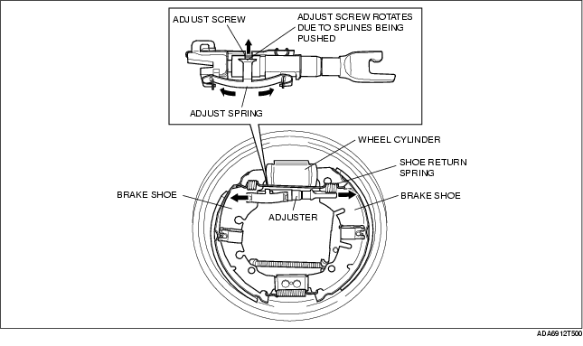
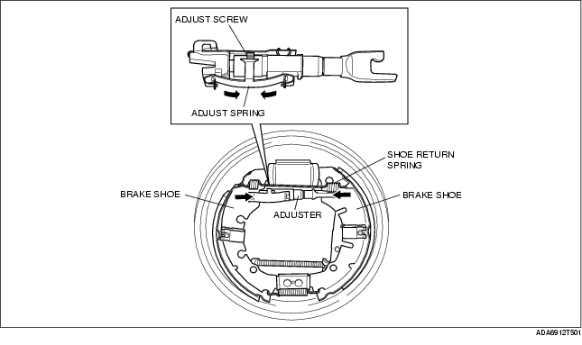

Rear brake (drum) operation
• An auto-adjusting function that constantly maintains the clearance between the brake drum and shoes by brake pedal operation has been adopted.
When the Brake Pedal Depressed
• When the brake pedal is depressed, the brake shoes are moved by the wheel cylinder in the directions of the arrows. Due to this movement of the shoes, the force, caused by the shoe return spring, pressing against the adjuster is released. The adjust screw is then rotated in the direction of the arrow due to the spring force of the adjuster spring. Due to this, the adjuster lengthens in the direction of brake shoe expansion.

Brake Pedal Released
• When the brake pedal is released, the adjuster is again pressed inward (contraction direction) due to the spring force of the shoe return spring. At the same time, the adjuster spring tab rides over the splines of the adjust screw according to the bending amount of the adjuster spring.

• Due to this operation, the clearance between the brake drum and shoes is automatically adjusted when the brake pedal is operated. When there is proper clearance, the adjuster does not lengthen the brake shoe in the expanding direction and, therefore, the auto-adjusting function does not operate.